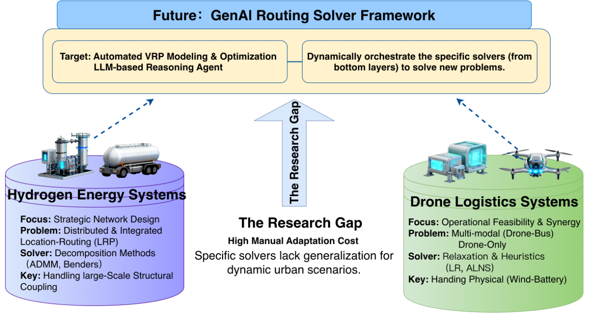

教育与学术履历 (Education & Academic)
仁荷大学 (韩国 Top15) | 硕博连读
主修运筹与供应链优化。GPA 稳居前 1%。荣获优秀留学生全额奖学金，并获得韩国政府科研基金资助。
华北水利水电大学 | 助理教师
担任《物流管理》课程助教，中英双语讲授运输、仓储、选址策略等核心内容，并拓展智慧物流、智能仓储等前沿科技主题。
西华大学 | 经济学 (本科)
打下扎实的经济学与系统分析理论基础。
产业实践与商业落地 (Industry Practice)
京东跨境事业部 | 采销助理岗
负责跨境采销控全流程，新增韩国直邮/保税SKU 182个，拉通跨部门获30万营销资源，通过销售区域分析调整分仓策略，预计降低仓配成本2%。
跨境电商主理人 & 自媒体矩阵运营
敏锐捕捉市场热点，直连韩国大型商超供应链，叠加顺丰CC直邮服务成功压缩单件物流成本达10%，实现月均GMV突破10万元。
核心研究方向 (Research Focus)
氢能源供应链网络全局优化与战略设计
SCI Q2 Published 2021.9 - 至今结合韩国不同区域的氢气供需差异，重点关注由副产氢供应过剩所导致的资源浪费问题，进行网络优化部署。在初期阶段，采用两阶段选址与路径优化模型；在中后期阶段，构建选址-路径一体化优化模型。
底层求解： 设计了 Branch and Cut（精确算法）与 ADMM（数学启发式算法），规模扩大时利用启发式方法提升计算效率。使副产品氢气利用率提高10%，关键工业领域提升70%。
智慧物流：无人机物流运输优化
Q1 Under Review IEEE-IV 会议 2024.9 - 至今受韩国山区地形和道路拥堵问题的影响，传统卡车配送效率受限。结合韩国本土电商平台取货-配送一体化需求，设计了基于无人机的取货（pick-up）与运输（delivery）协同优化方案。
底层求解： 针对动态风场的不确定性（电池消耗呈非线性趋势），将能源消耗模型线性化，并采用动态规划结合拉格朗日松弛（Lagrangian Relaxation）进行求解。
公共交通辅助的多无人机包裹配送优化 (PT-MDPD-AP)
Q1 Under Review 2024.9 - 至今公共交通作为一种潜在的协同运输模式，能够有效降低无人机的独立飞行成本。模型允许无人机在任意地点起降，无需专门前往车站换乘，从而提升配送灵活性，最小化配送总时间并延长使用寿命。
生鲜产品无人机卡车协同配送
协同规划 2025.1 - 至今针对冷链运输当日达、温控要求以及生鲜产品生命周期较短的特点，通过动态调整不同生命周期产品的配送优先级，并制定灵活的市场折扣机制，以最大化产品价值和销售效率。无人机用于快速补货与短程配送，卡车承担大规模运输任务。
底层求解： 设计启发式算法以及 Branch and cut 算法进行求解。
底层算法与开源仓库 (Code & Open Source)
这里收录了我在运筹优化与 VRP 求解过程中手写的核心底层算法框架，涵盖精确求解器（Branch-and-Cut 等）、数学分解法（ADMM 等）以及动态规划模块。

* 基于前沿运筹与 AI 研究构建的 VRP Agent 架构示意图 *
致力于跨越传统运筹学底层求解器与实际应用之间的 "Research Gap"。通过引入大语言模型 (LLM)，构建自动化、智能化的路径规划推理 Agent。
🧠 LLM-based Reasoning Agent
Target: 实现自动化的 VRP（车辆路径规划）建模与优化目标设定，理解复杂的现实业务约束。
⚙️ Dynamic Orchestration
Action: 动态调度底层求解器矩阵（如拉格朗日松弛、ADMM、启发式算法），以解决全新的、复杂的物流网络问题。